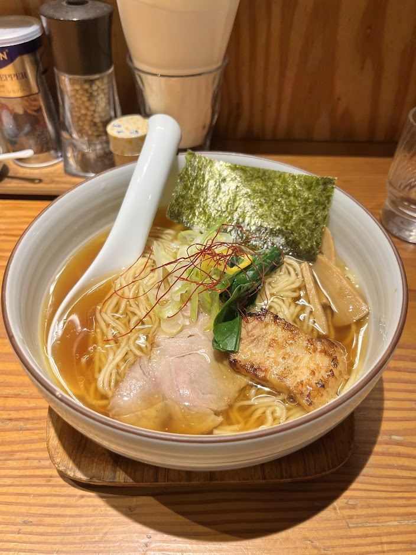

Menya Hidamari - Shio Ramen

- Price: ¥950
- Rating: 8.5/10
- Last date I had it : 2024-12-25
- Review: seafood based shio broth that was ultra clean along w/ a bright velvety oil that coats everything well. the saffron and yuzu toppings add a nice cut thru the oil, and the two types of chashu (fatty and lean) make for a nice overall balance in the dish. For shio ramen lovers, the rating would be higher, but even for someone like me who doesn’t like shio ramen that much, it was really good.